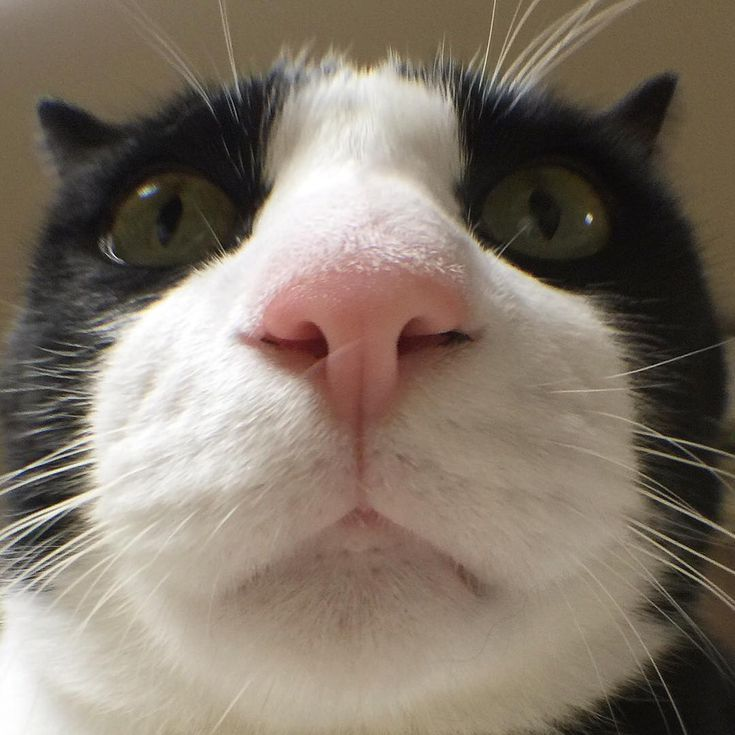

My Resume

Summary
meow :3
Education
i went to kitty school to learn how to be a good kitty. here is a picture of my teacher, she always calls me a good kitty.
Work experience
Emotional Support - CaTherapy
- Conducted psychological evaluations to understand a client's emotional and mental state.
- Facilitated one-on-one or group therapy sessions to address specific mental health issues.
- Regularly assessed a client's progress and adjusted treatment plans as needed.
Biscuit Maker - BaKitties
- Mixed ingredients, kneaded dough, baked, and decorated baked goods.
- Ensured that all baked goods meet quality, taste, texture, and appearance standards.
- Received and prepared special orders for customers.
Skills
- Customer service: ⭐️⭐️⭐️⭐️⭐️
- Organizational skills: ⭐️⭐️⭐️⭐️
- Problem solving: ⭐️⭐️⭐️⭐️⭐️
Awards and Certifications
- Employee of the Month - BaKitties (March 2025)
Other